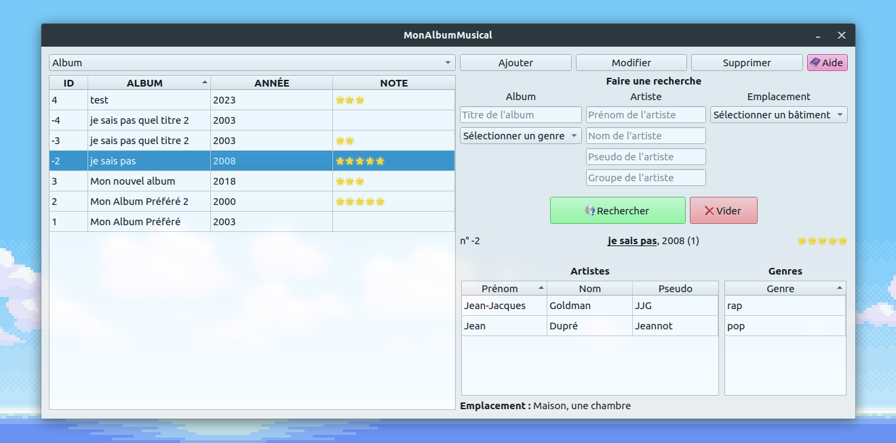

Gestionnaire d'albums
MonAlbumMusical

Terminé
Langue :

Début du projet :
21/06/2023
Fin du projet :
30/09/2025
Langages et OS
Z C++ (Qt)
W SQLite
Linux (Ubuntu)
Windows 11
Equipe
Matthieu FARANDJIS
Plus sur le projet
Présentation
MonAlbumMusical est un logiciel permettant de répertorier ses albums de musiques, et retrouver facilement toutes les informations nécessaires.
Vous pouvez associer à chaque album : des artistes, des genres ou encore un emplacement.
Vous voulez savoir si vous possédez un album en particulier de Jean-Jacques Goldman ? C'est possible !
Vous voulez savoir où se trouve cet album, sur quel étage et quelle étagère ? C'est possible !
Vous voulez offrir un de vos albums, et vous rechercher vos doublons ? C'est possible aussi !
Le logiciel n'offre pas la possibilité de distinguer un vinyle d'un CD ou d'une cassette audio, c'est la même interface pour tous les supports.
Le logiciel est disponible pour Ubuntu (Linux, Debian) et Windows.
Le logiciel n'est pas encore disponible en téléchargement. (au jour du 13/10/2025)
Logiciel utilisé : CLion de Jetbrains
Lancer le projet
Le logiciel n'est pas encore disponible en téléchargement.
Le logiciel étant un exécutable, il peut être démarré comme n'importe quel logiciel !
Cependant, il peut être bloqué par votre antivirus ou par Windows, bien qu'il n'y ai aucun risque à le démarrer.